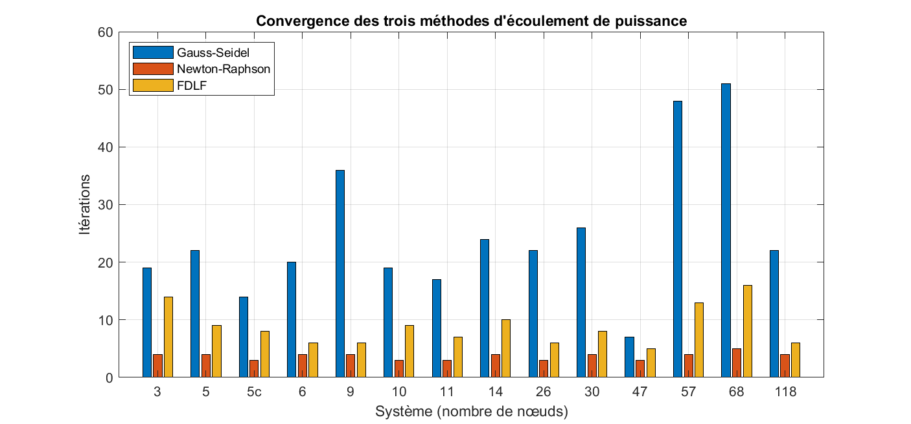
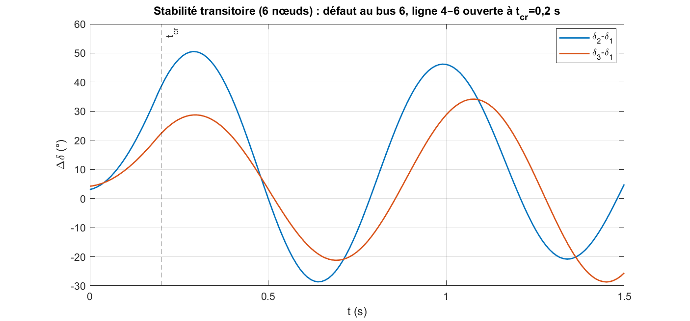

Lire le réseau avant de le résoudreUnderstand the network before solving it
Un réseau électrique ne se résume pas à une seule courbe. Il faut représenter ses lignes, ses transformateurs et ses nœuds avant d’interpréter tensions, pertes ou comportement après défaut.A power network cannot be reduced to a single plot. Lines, transformers and buses must be represented correctly before voltages, losses or post-fault behaviour can be interpreted.
J’ai construit ce projet en solo dans le cadre du TP d’analyse des réseaux électriques à l’ENP. Le parcours de calcul part des données de branche, assemble Ybus et Zbus, résout l’écoulement de puissance, puis utilise l’état pré-défaut pour une étude de stabilité transitoire.I built this project individually for the ENP power-system analysis lab. The calculation path starts with branch data, assembles Ybus and Zbus, solves power flow, then uses the pre-fault state for a transient-stability study.
L’interface App Designer expose les trois outils sans cacher la logique numérique : les réseaux de test et les fonctions MATLAB restent séparés, ce qui permet aussi une validation sans interface graphique.The App Designer interface exposes all three tools without hiding the numerical core: test networks and MATLAB functions remain separate, allowing headless validation as well.
- DonnéesInputs
Bus PQ, PV et slack ; lignes et transformateurs à prise hors nominale.PQ, PV and slack buses; lines and off-nominal tap transformers.
- MatricesMatrices
Construction de Ybus et Zbus, avec comparaison à l’inverse de Ybus.Ybus and Zbus construction, with a check against inverse Ybus.
- QuestionQuestion
Que gagne-t-on en précision et en temps avec chaque solveur ?What does each solver gain in accuracy and time?
Trois chemins vers le load flowThree routes to load flow
Le cœur du projet compare Gauss–Seidel, Newton–Raphson et la méthode découplée rapide BX sur les mêmes réseaux et avec les mêmes catégories de bus.The core of the project compares Gauss–Seidel, Newton–Raphson and BX fast-decoupled load flow on the same networks and bus categories.
Le constructeur Ybus additionne correctement les branches parallèles et intègre les transformateurs. Zbus est obtenue par construction directe ; l’écart maximal avec inv(Ybus) sert de contrôle sur les réseaux où cette comparaison est possible.The Ybus builder accumulates parallel branches and incorporates transformers. Zbus uses a direct building algorithm; maximum error against inv(Ybus) serves as a check where that comparison is defined.
Gauss–Seidel et Newton–Raphson prennent en compte les contraintes de puissance réactive des bus PV ; la version découplée rapide BX sert à comparer une formulation différente sans cette gestion des limites. Leurs itérations et résultats sont étudiés de 3 à 118 nœuds, dont les cas IEEE 14, 30, 57 et 118.Gauss–Seidel and Newton–Raphson handle PV-bus reactive-power limits; the BX fast-decoupled version provides a different formulation for comparison without that limit handling. Their iterations and outputs are studied from 3 to 118 buses, including IEEE 14, 30, 57 and 118 cases.
- Gauss–SeidelGauss–Seidel
Itération accélérée et contrôle des limites Q des bus PV.Accelerated iteration and PV-bus reactive-limit handling.
- Newton–RaphsonNewton–Raphson
Formulation rectangulaire pour résoudre les inconnues du réseau.Rectangular-coordinate formulation for solving network unknowns.
- BXBX
Découplage rapide pour confronter coût de calcul et résultat.Fast-decoupled formulation for comparing computational cost and output.

Du régime établi au défautFrom steady state to a fault
Après le load flow, une séquence défaut puis ouverture de ligne alimente un modèle classique de stabilité transitoire. L’angle rotorique est intégré avec la méthode d’Euler.After load flow, a fault and line-opening sequence feeds a classical transient-stability model. Rotor angle is integrated with Euler’s method.
Le test numérique documenté porte sur quatorze réseaux pour les matrices et solveurs, avec un cas à six nœuds pour la stabilité. Sur le cas IEEE 118, les pertes calculées de 131,96 MW correspondent à la référence citée dans le projet ; Zbus et inv(Ybus) concordent à la précision machine sur les réseaux ancrables.The documented numerical suite covers fourteen networks for matrices and solvers, plus a six-bus stability case. On IEEE 118, computed losses of 131.96 MW match the reference cited in the project; Zbus and inv(Ybus) agree to machine precision on anchorable networks.
Il s’agit d’une étude de simulation et de comparaison numérique. Elle n’établit pas une validation sur réseau réel ; son intérêt est de relier modèle, algorithme et interprétation des résultats dans un même outil.This is a simulation and numerical-comparison study, not validation on an operating grid. Its value is connecting model, algorithm and interpretation within one tool.

Ce que montre le projetWhat this project demonstrates
Un même réseau peut être abordé par ses matrices, son équilibre de puissance et sa dynamique après incident. La valeur vient de leur cohérence, vérifiée à chaque étape.The same network can be examined through its matrices, power balance and post-disturbance dynamics. The value lies in their consistency, checked at every step.
Le dépôt contient le code MATLAB, les systèmes de test et la logique de validation. Le rapport détaille les hypothèses, méthodes, figures et limites de l’étude.The repository contains MATLAB code, test systems and validation routines. The report documents assumptions, methods, figures and study limits.